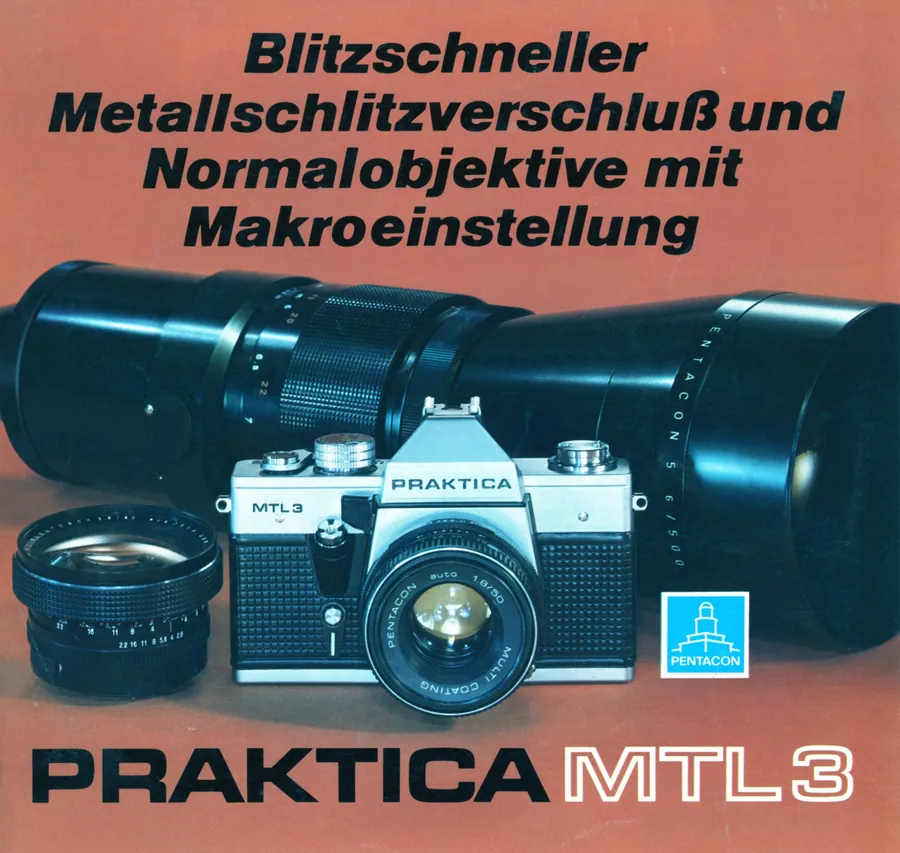
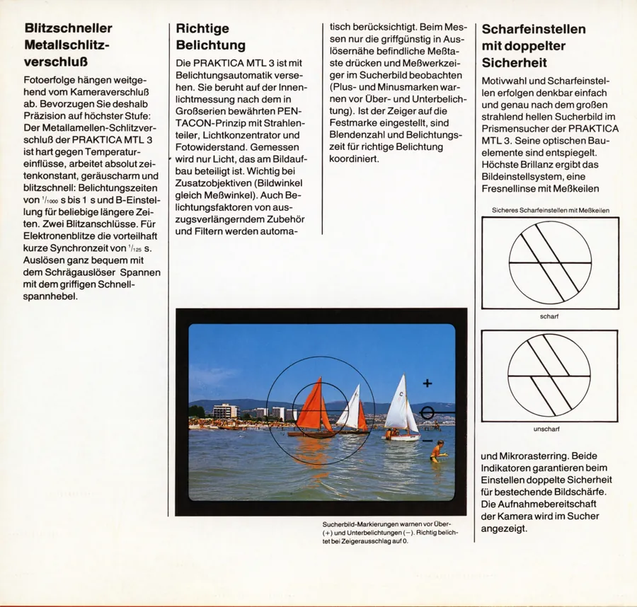
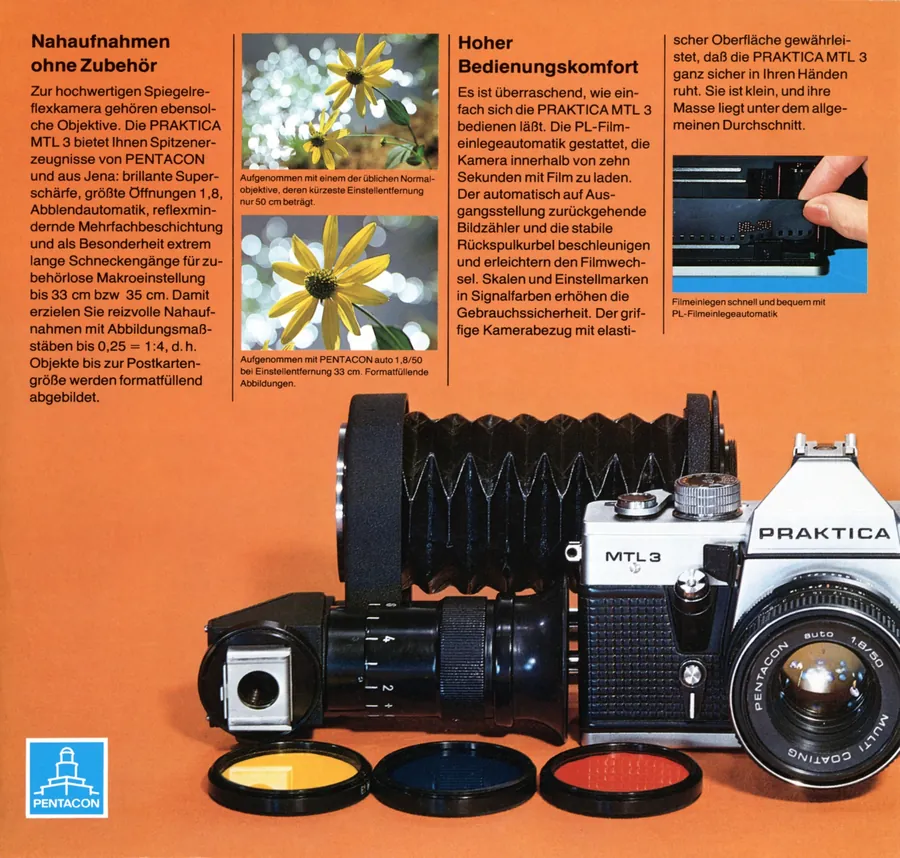
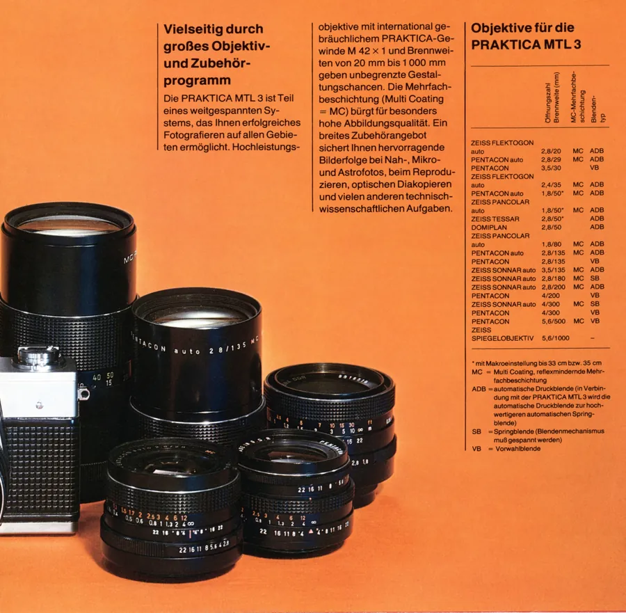
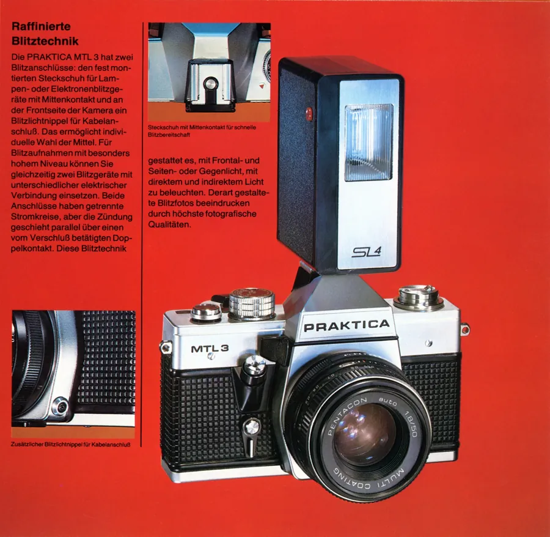
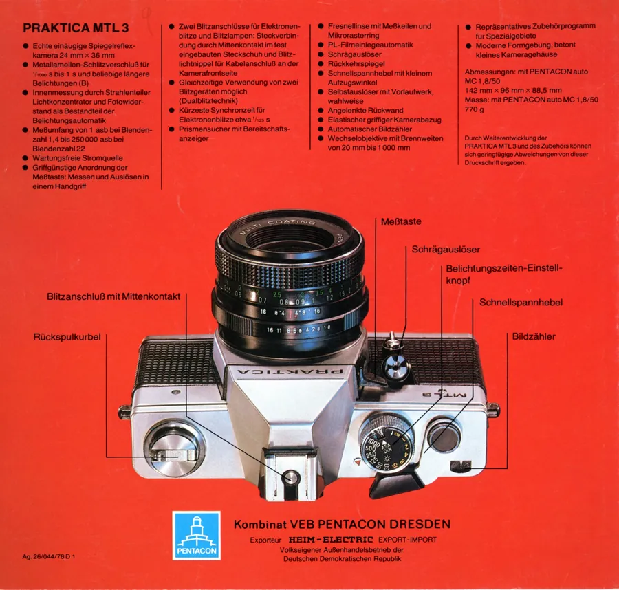

Przejdź do treści
Zenbliski
Menu
Archiwalne
Analogowe
Kolekcja
Akcesoria foto
Materiały reklamowe
Artykuły – blog
Foto ciekawostki
Cyfrowe
Materiały reklamowe
Foldery i prospekty
Praktica MTL 3, 1978 r., niemiecki






Poprzednia
Praktica LTL, 1973 r., polski
Następna
Praktica Nova B, 1967 r., polski